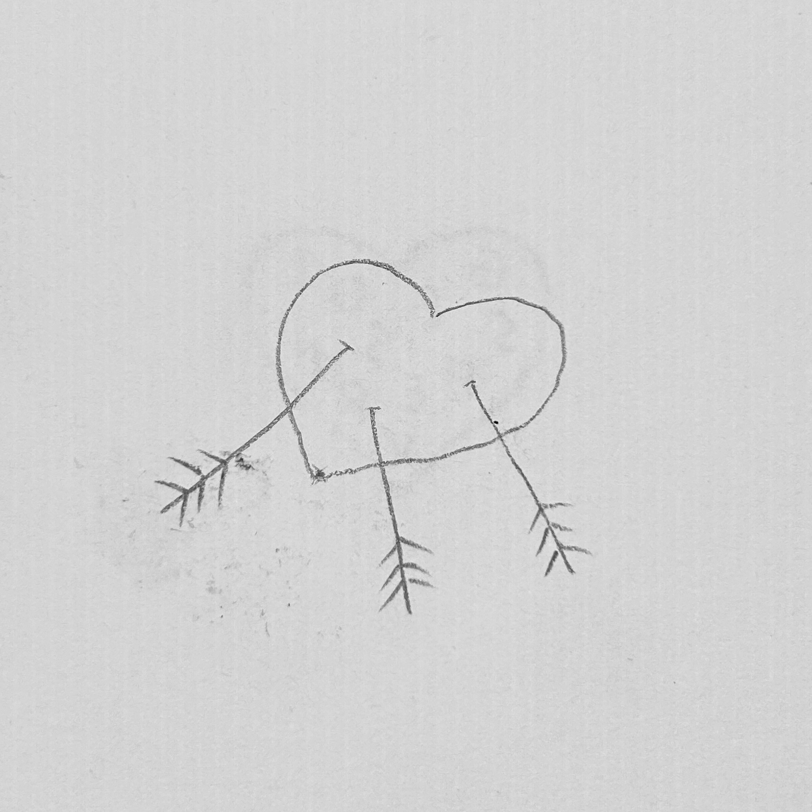

Rejection · Heartbreak · Loneliness

The heart that keeps taking hits
Three arrows. Because there were three things I couldn't fix at once.
I drew this on whatever paper was nearby. There wasn't a plan. I just needed to get it out.
The arrows aren't going in. They're already there. That's an important distinction I didn't notice until later.
Still don't know exactly what it means. That might be the point.